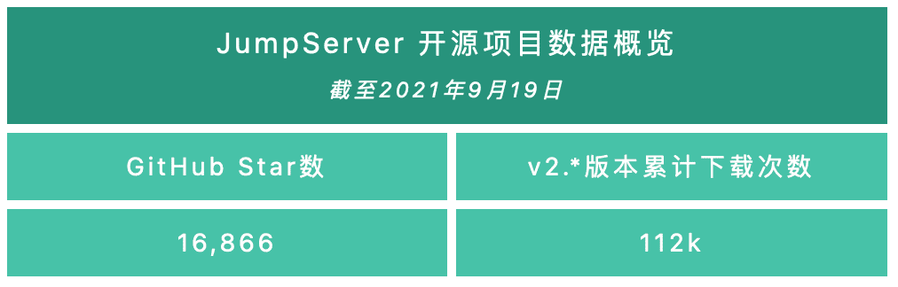
9月22日，JumpServer开源堡垒机正式发布v2.14.0版本。在该版本中，JumpServer新增了会话共享功能，支持多用户进行协同操作，以满足运维人员在不同场景中的运维需求，同时对加入会话的用户活动进行记录。需要注意的是，JumpServer目前仅支持通过Web Terminal连接的SSH/Telnet协议会话进行共享，另外，还支持用户在Web Terminal中设置终端主题。在用户个人信息页面中，用户可以针对JumpServer内部的消息选择性地开启消息接受方式，例如企业微信、钉钉等。
X-Pack增强包方面，改密计划不仅支持对资产进行批量改密，同时也支持对数据库应用进行批量改密，满足用户对数据库密码的相关安全策略要求。目前已支持的数据库类型包括：MySQL、Oracle、PostgreSQL和MariaDB。
在v2.14.0版本中，JumpServer新增工单系统二级审批功能，管理员可以针对不同类型的工单设置一级或二级审批流程。在新版本中，MFA多因子认证方式不仅支持基于时间的一次性算法（即TOTP）认证，同时也支持通过短信（SMS）验证码的方式进行认证。另外，在这一版本中，云管中心支持对Google Cloud Platform（谷歌云）的资产进行同步。
新增功能
1. Web Terminal支持会话共享和多用户协同操作
在JumpServer v2.14.0版本中，用户通过Web Terminal连接SSH/Telnet资产成功后，可以在页面中创建分享链接，并将分享链接和验证码发送给其他用户。
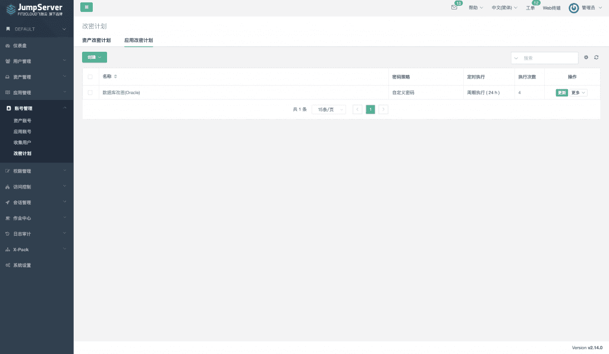
其他用户访问链接并输入验证码，验证通过后即可加入到同一会话中，并进行操作。
加入成功后，用户可以在Web Terminal会话页面看到所有会话中的在线用户。
对于共享会话加入者的活动记录，管理员可以进入“会话管理”菜单中的“活动”页面进行查看，并开展相关的审计操作。
2. Web Terminal支持用户自定义主题方案
在JumpServer v2.14.0版本中，用户通过Web Terminal连接SSH/Telnet资产成功后，可以在页面中点击“设置”图标修改终端主题风格，从而提升用户的使用体验。
3. 改密计划支持对数据库应用进行批量改密（X-Pack增强包内）
在JumpServer v2.14.0版本中，改密计划不仅可以对资产进行批量改密，同时也支持对数据库应用进行批量改密。目前已经支持的数据库类型包括MySQL、Oracle、PostgreSQL和MariaDB，创建应用改密计划时提供了三种密码策略供管理员进行选择。
改密计划创建成功后，管理员可以查看所有应用改密计划、执行列表和改密任务。
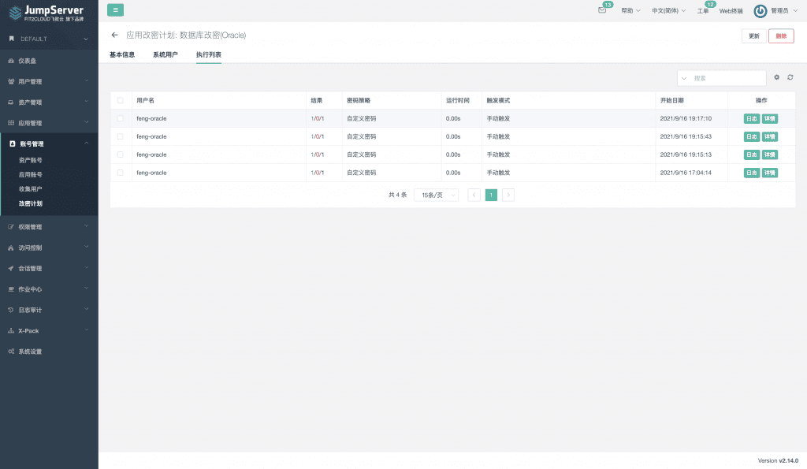
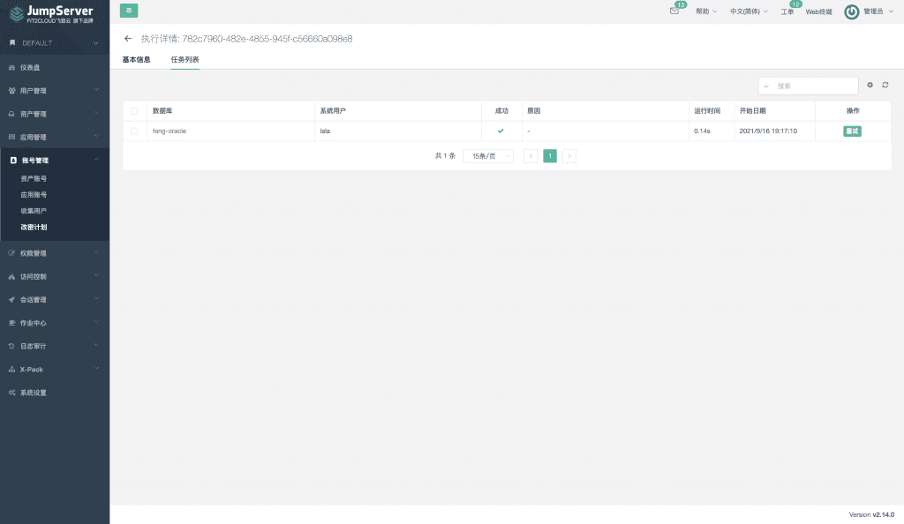
4. 工单系统支持设置一级、二级审批流程（X-Pack增强包内）
在JumpServer v2.14.0版本中，工单系统支持一级、二级审批流程，管理员可以针对不同的工单类型进行单独设置。而审批流程中的每一级都有四种审批人策略供管理员选择，其中包括超级管理员、组织管理员、超级管理员+组织管理员，以及自定义用户。
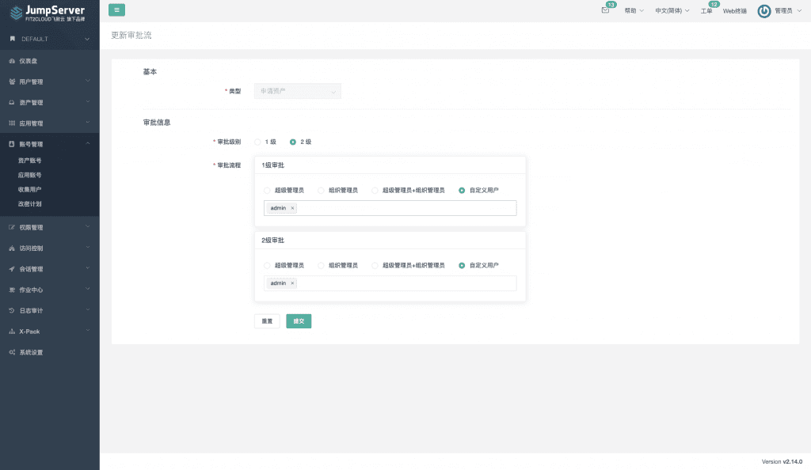
用户创建申请资产工单。
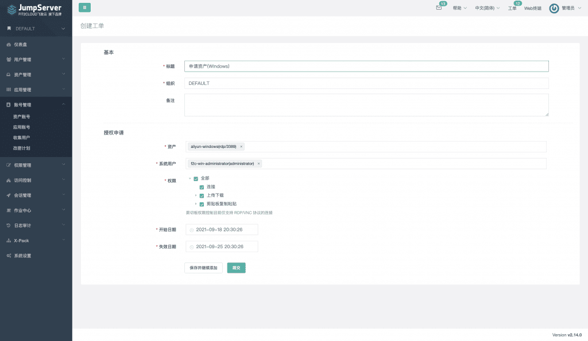
工单创建成功后会自动流转至一级审批，这时所有的一级审批人员均可对工单进行审批操作。
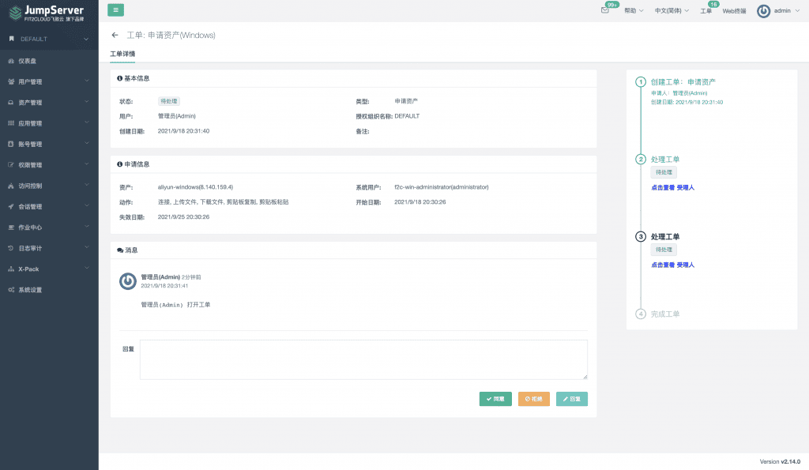
一级审批人审批工单通过后，会自动流转到下一级审批流程中。
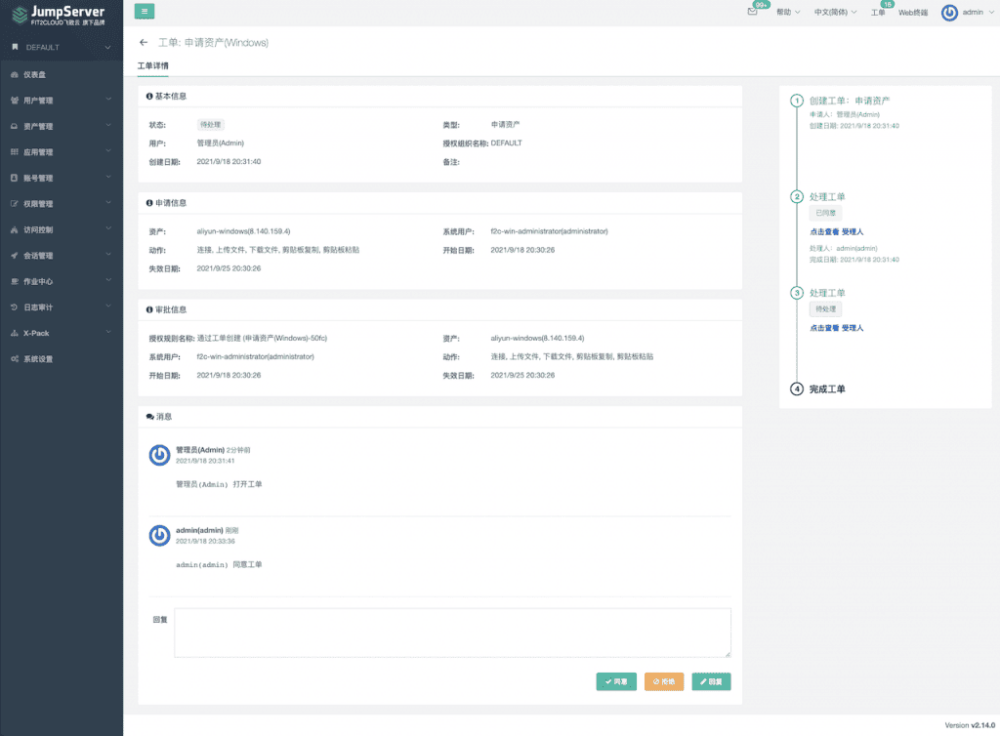
5. MFA多因子支持通过短信（SMS）验证码方式进行二次认证（X-Pack增强包内）
在JumpServer v2.14.0版本中，用户登录支持通过短信验证码的方式进行MFA二次认证。首先，管理员需要在“系统设置”→“信息”中配置并开启短信服务，目前支持阿里云、腾讯云的短信服务平台。
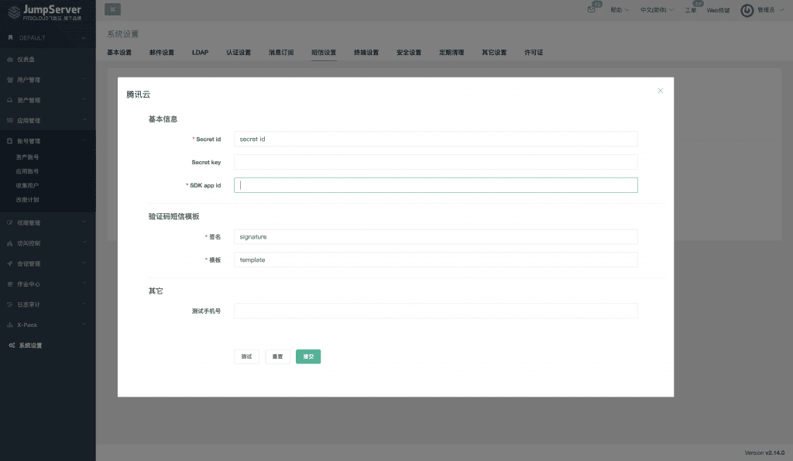
开启MFA认证的用户在登录JumpServer时可以选择短信验证码作为二次认证方式。
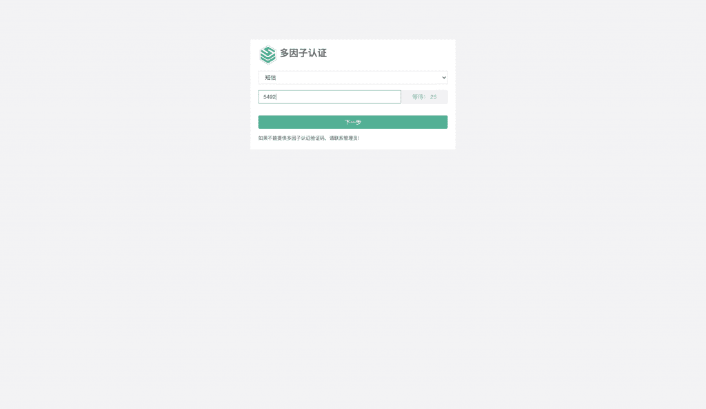
6. 云管中心支持对Google Cloud Platform（谷歌云）的资产进行同步（X-Pack增强包内）
在JumpServer v2.14.0版本中，已支持对Google Cloud Platform（谷歌云）资产的同步功能。管理员在创建谷歌云账号时，需要上传一个Service Accounts Key文件（仅支持JSON格式）。
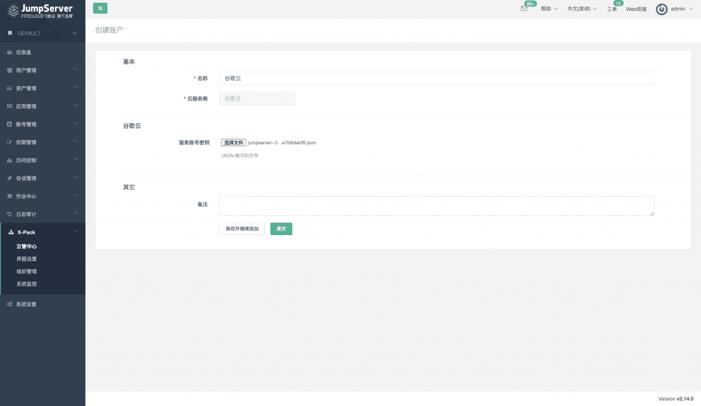
账号创建完成后，管理员创建同步实例任务，执行方式支持定时、定期执行和手动执行。
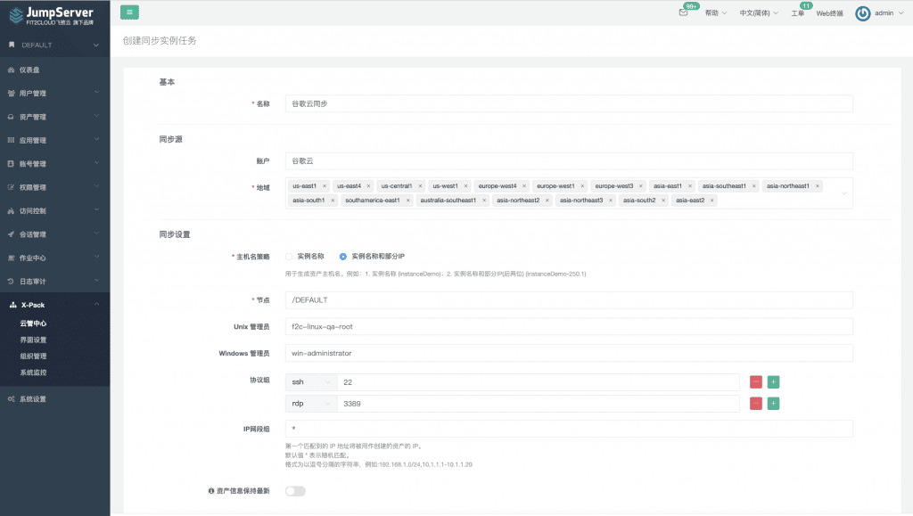
功能优化
■ 针对项目配置参数，管理员可以直接在系统设置中进行修改，修改完成后立即生效，不再需要修改配置文件和重启服务；
■ 支持Windows会话在移动端进行操作，同时增加快捷键“Shift+Alt+Ctrl”来快速呼出右侧栏；
■ 对于第三方认证的用户，在登录JumpServer时支持进行MFA二次认证。同时也支持使用企业微信、钉钉进行扫码登录；
■ 在授权列表中显示资产/应用授权规则的创建方式，例如手动创建、工单创建，以便管理员对授权进行区分和快速查找；
■ 创建资产授权规则，当授权动作选择上传、下载、复制、粘贴中的任意一项或几项时，由于连接动作是前置条件，所以禁止用户取消；
■ 修改新注册终端的名称（包含宿主机的主机名标识），以便管理员在多节点部署架构中区分终端所属节点；
■ 连接Windows会话时，在用户名、密码以及连接方式的对话框中增加“下次自动登录”选项来记住用户的连接方式。当用户连接资产时不需要每次都进行选择，从而提高用户的使用体验；
■ 增加配置项来开启或关闭Windows会话的XRDP连接方式（X-Pack增强包内）；
■ 支持对通过XRDP方式连接的Windows会话进行全屏操作和本地磁盘挂载（X-Pack增强包内）；
■ 增加JumpServerClient和MicrosoftRemoteDesktop应用下载页面，便于纯内网环境的用户使用XRDP方式连接Windows（X-Pack增强包内）。
Bug修复
■ 修复应用账号不能通过用户名进行过滤的问题；
■ 修复WebSocket服务引起的Redis连接数量持续增加的问题；
■ 修复删除已关联资产的特权用户偶尔失败的问题；
■ 修复当资产和特权用户关系发生变化时，资产特权用户未及时更新的问题；
■ 修复当部署服务器的磁盘、内存达到阈值时，偶尔未发送告警消息的问题；
■ 修复当设置未分组节点下显示单独授权的资产配置项时，用户授权树未及时更新的问题；
■ 修复批量更新组织失败的问题（X-Pack增强包内）；
■ 修复终断通过XRDP方式连接的Windows会话偶尔失败的问题（X-Pack增强包内）。